NIKAT: RESISTENCIA
PERSONAL ACTIVO / SOBREVIVIENTES
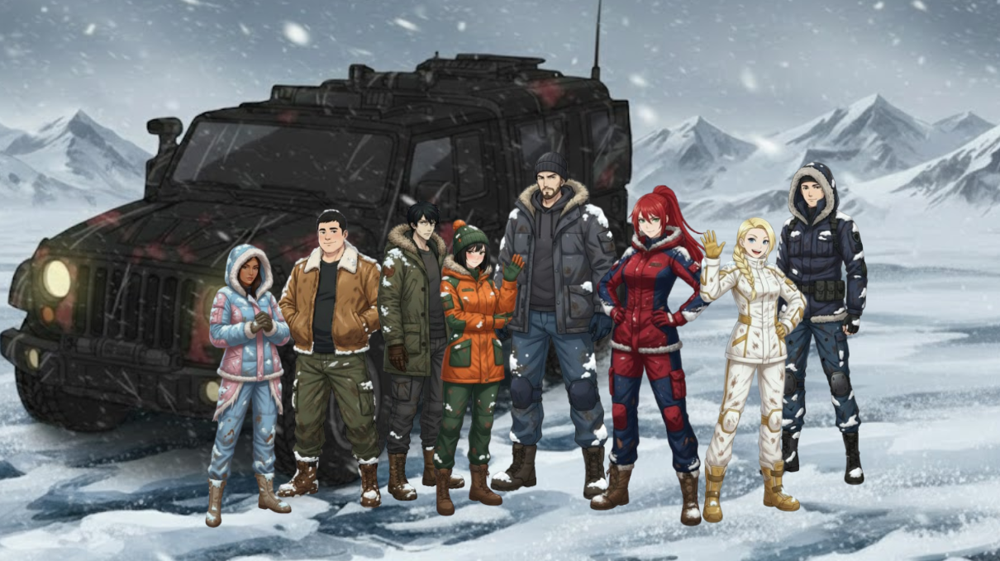
EQUIPO DE EXPLORACIÓN
Equipo de exploración tras la caída de la Tierra.
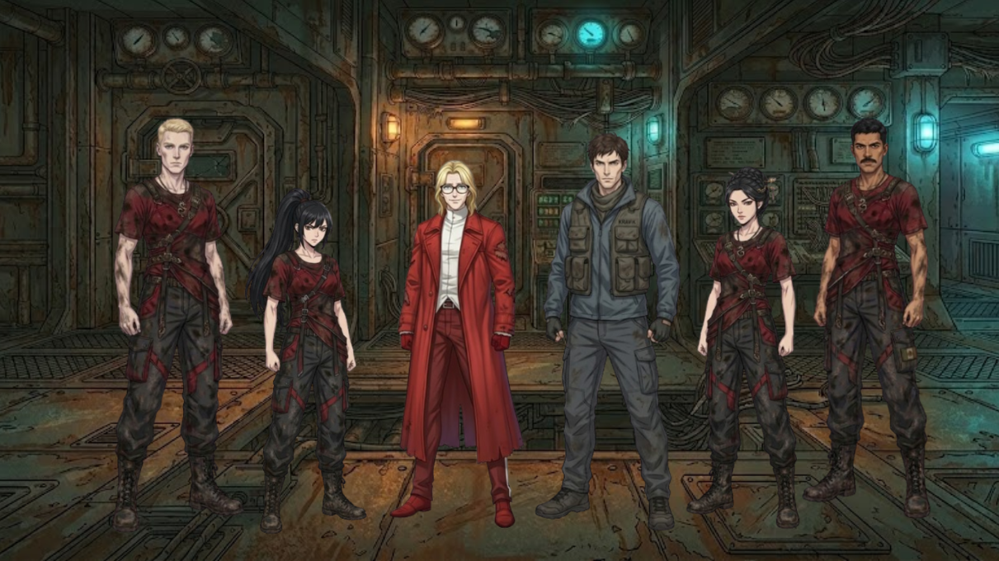
SUPERVIVIENTES BUNKER
Personal del bunker tras la caída de la Tierra.
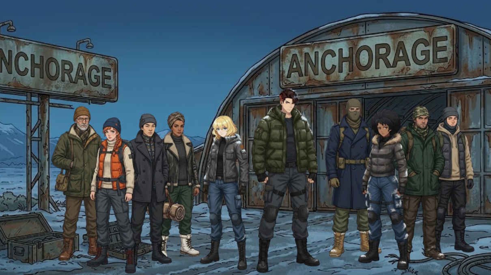
PERSONAL DE ANCHORAGE
Personal de Anchorage tras la caída de la Tierra.
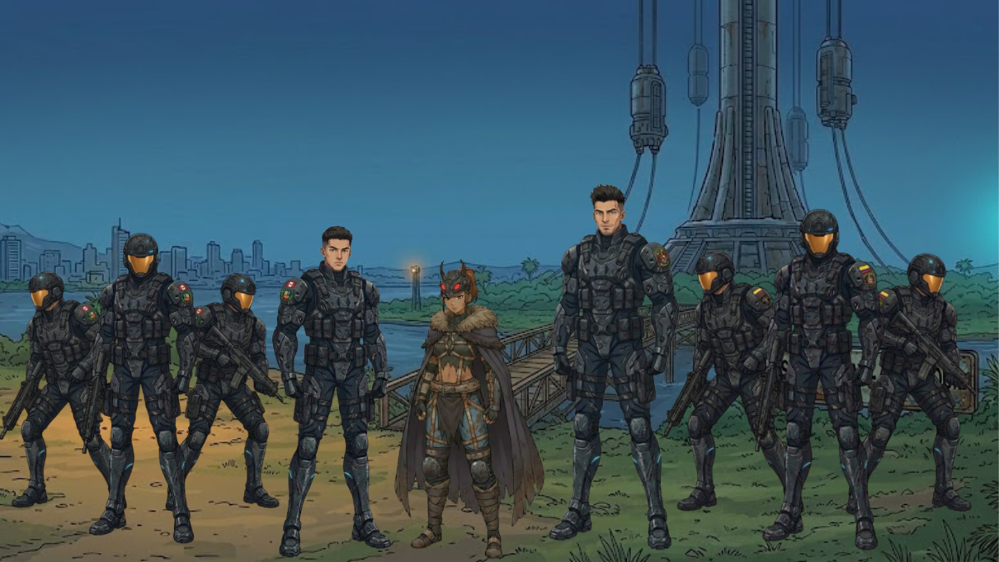
SOBREVIVIENTES PACIFICO
Personal de Guayaquil tras la caída de la Tierra.
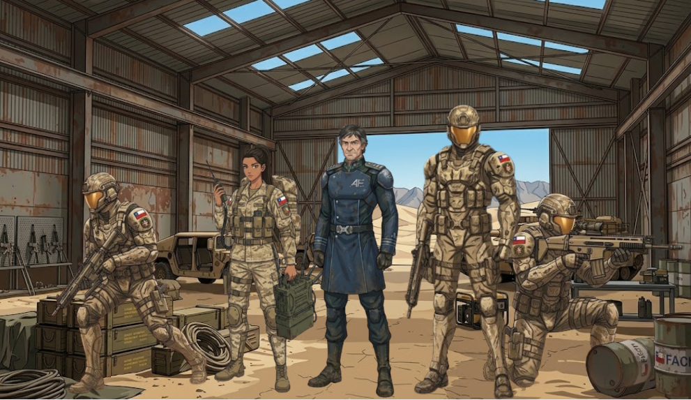
SOBREVIVIENTES ANTOFAGASTA
Personal de Antofagasta tras la caída de la Tierra.
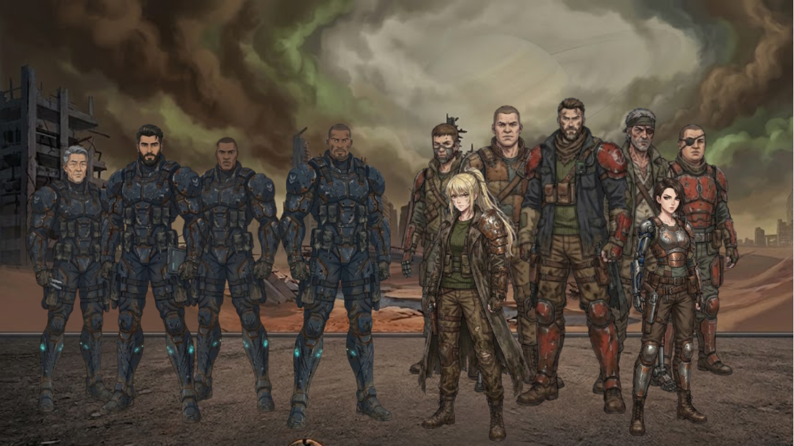
SOBREVIVIENTES COLUMBIA
Personal de Columbia tras la caída de la Tierra.
NIKAT
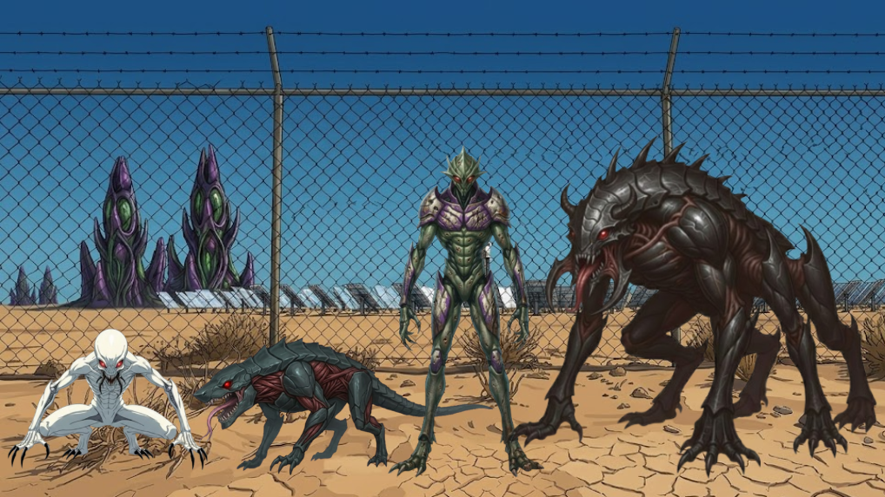
INFANTERÍA VETERANA
Unidades Nikat estandar.
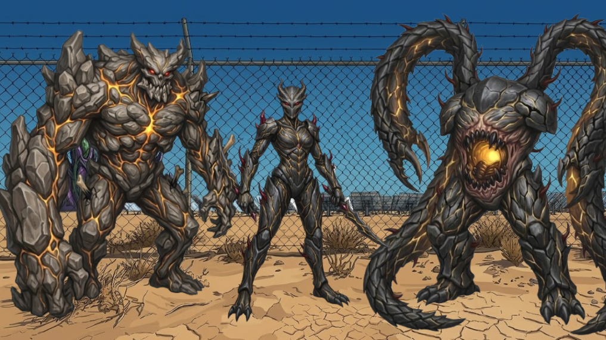
UNIDADES DE ELITE
Pseudo generales.
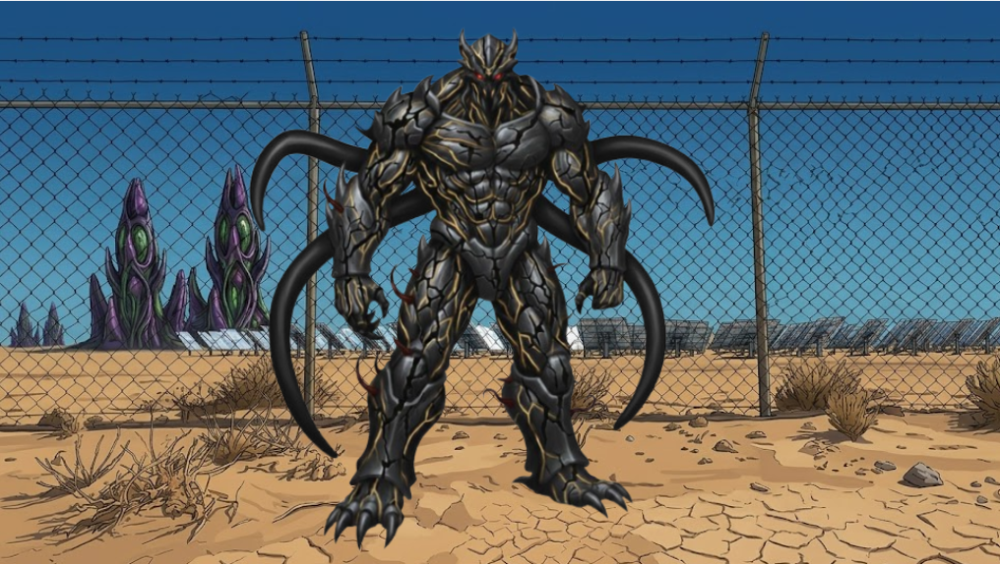
GENERAL NIKAT
General Nikat???.
PUNTOS DE CONFLICTO GLOBAL

GUAYAQUIL: BASE ASCENSOR ESPACIAL ISLA SANTAY
Base del ascensor espacial conectado a la EDE-40.
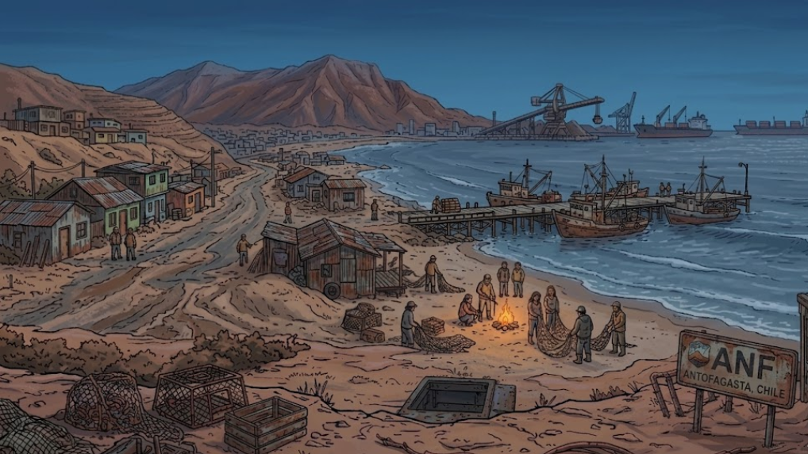
ANTOFAGASTA: LA FORTALEZA
Centro fortificado de la resistencia en el Nodo Sur.
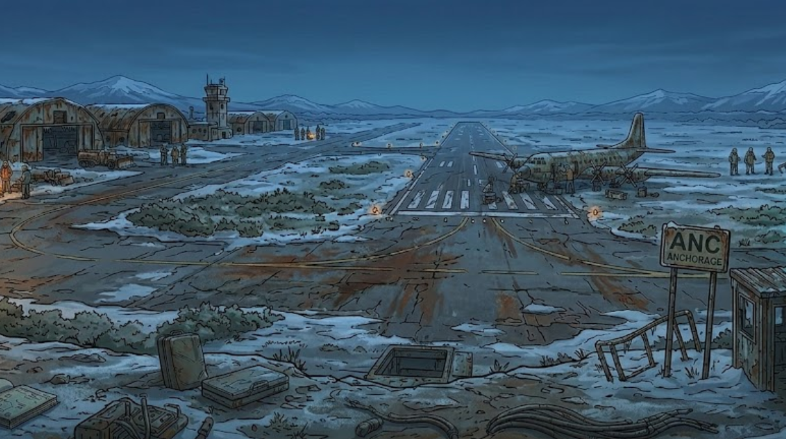
ANCHORAGE: EL BASTIÓN
Bastión de resistencia al norte.